PathSnap matches noisy 1 Hz GPS observations to a road network and rebuilds the route the vehicle drove. For every GPS point we take the ten nearest road arcs as candidates, compute 16 features for each candidate, and score them with a classifier that estimates the probability that a candidate is the arc the vehicle was on. A hidden Markov model decoded with the Viterbi algorithm then turns those per-point probabilities into a single route that follows the road graph.
We trained six classifiers, picked LightGBM, tuned it with Bayesian optimisation, and tuned the HMM decoder on the training trips. On the ten student-testing trips the final system matches 95.4% of GPS points to the reference arc (the classifier alone reaches 91.8%), and the reconstructed routes reach a route F1 of 0.979. The system runs on two laptops: a FastAPI backend with the model, decoder and reference data, and a browser UI that sends a trip ID and draws the returned route.
| Stage | Result on the 10 student-testing trips |
|---|---|
| Best untuned classifier (LightGBM) | Top-1 0.905, macro F1 0.941, log loss 0.062 |
| LightGBM after Bayesian tuning (40 trials) | Top-1 0.907, macro F1 0.943, log loss 0.061 |
| Classifier only → classifier + HMM (mean of 10 trips) | point accuracy 0.918 → 0.954, route continuity 0.770 → 0.915, route F1 0.810 → 0.979 |
Each trip folder holds four headerless text files. The .track file has longitude, latitude and a timestamp in seconds. The .nodes file has the longitude and latitude of each road-network node, and the row index is the node ID. The .arcs file has a from-node and a to-node per row, and the row index is the arc ID. The .route file is the ordered list of arc IDs the vehicle drove. A row in the track does not correspond to a row in any other file: the reference gives a sequence of arcs, not one arc per GPS point, so the per-point labels had to be built (section 2.2).
Every trip comes with its own road network. Two-way streets appear as two arcs with the same geometry and opposite directions, so a matcher has to get the direction right as well as the street.
| Partition | Trips | GPS points | Used for |
|---|---|---|---|
| train | 80 | 208,417 | All EDA statistics, feature selection, training, cross-validation, Bayesian optimisation, HMM tuning |
| student_test | 10 | 19,160 | Model comparison and every student-test number in this report |
| evaluator_test | 10 | n/a | Only served by the deployed API during evaluation. Not used to choose any model, feature or parameter. |
| Check | train (80 trips) | student_test (10 trips) |
|---|---|---|
| Missing (NaN) values in tracks | 0 | 0 |
| Coordinates outside the valid range | 0 | 0 |
| Repeated or decreasing timestamps | 0 | 0 |
| Trips with at least one gap over 5 s | 45 | 2 |
| Share of steps exactly 1 s apart (mean) | 93.8% | 98.2% |
| Isolated road-network nodes | 0 | 0 |
| Points more than 50 m from the aligned reference arc | 11.2% | 0.14% |
No values are missing in the usual sense. The data is incomplete in time instead: some trips have long gaps. Trip 00000090 has a gap of 153,064 s (about 42 hours) during which the position moves by only 36 m, so the vehicle was parked while logging stopped. Trip 00000078 has 124 gaps over 5 s. These gaps matter for the HMM transitions (section 5).
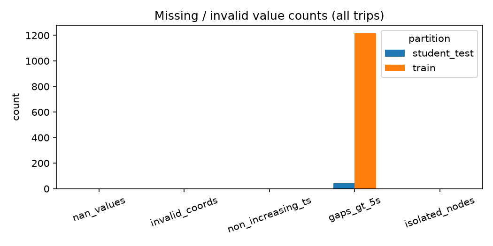
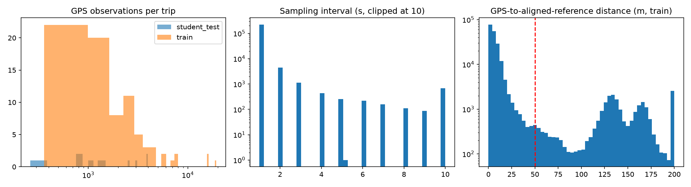
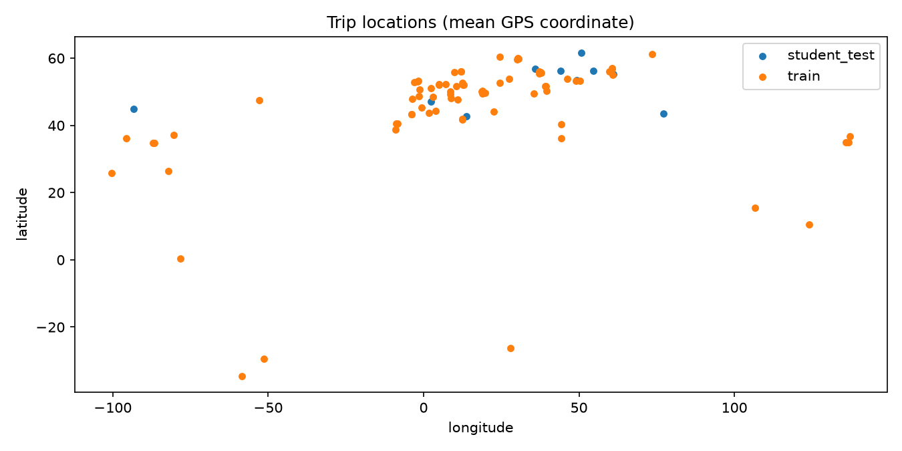
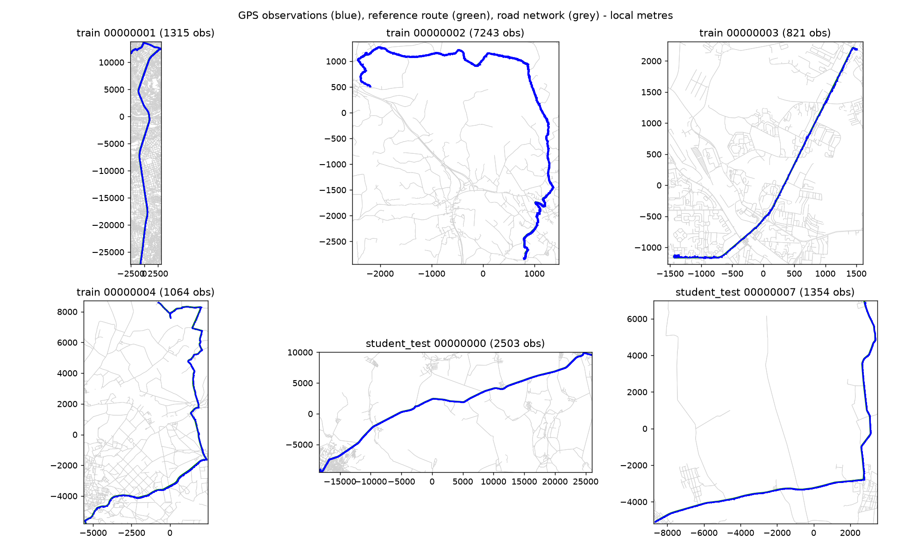
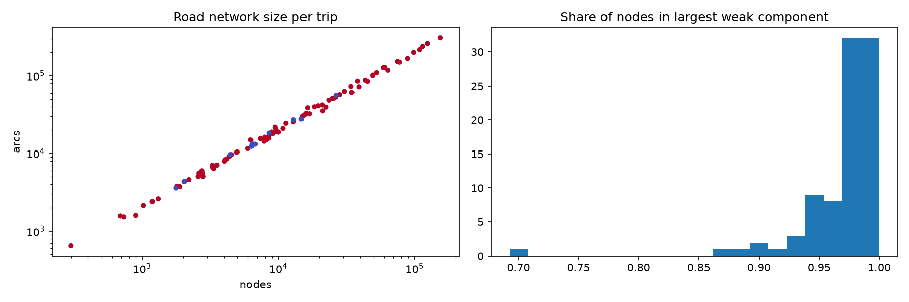
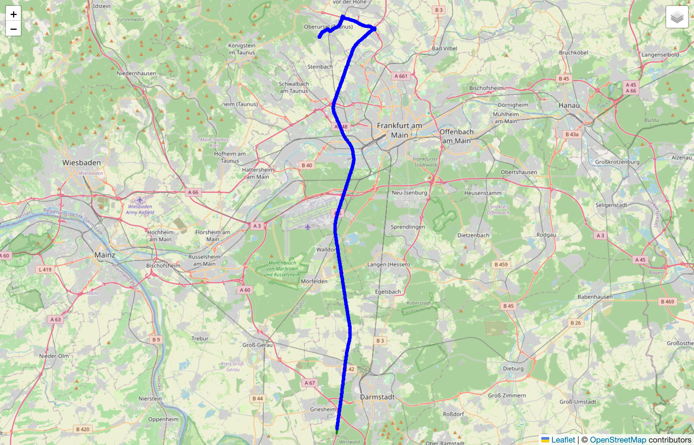
results/eda/eda_map_train.html.A classifier scores one (GPS point, candidate arc) pair at a time. With ten candidates per point, the true arc is among them for 99.33% of reliable training points and 99.88% of student-test points, so the candidate miss rate is 0.67% and 0.12%. The 16 features fall into four groups, each answering a question we saw in the EDA.
| Group | Features | Why |
|---|---|---|
| Distance | dist, dist_rank, dist_gap (distance minus the closest candidate's), dist_ratio, gauss_share (Gaussian weight with σ = 8 m, normalised over the candidates), n_within_30 | The true arc is usually close, but the closest arc is right only about half the time (55.9% on student_test), so we describe distance relative to the other candidates as well as in metres. |
| Heading | heading_diff (angle between the GPS heading and the arc direction), speed, heading_x_speed | The two directions of a two-way street have the same distance, and only direction separates them. The GPS heading is taken from the points 2 s before and after. When the vehicle is nearly stopped the heading is noise, so speed tells the model how far to trust it. |
| Context | ctx_dist_mean, ctx_heading_diff: the mean distance and heading difference of the same arc to the 3 points before and the 3 after | A single point can jump to a parallel street. Its neighbours usually stay on the true road. |
| Geometry and topology | arc_len, proj_frac (where along the arc the point projects), end_clipped (projection falls past an end), from_out_deg, to_in_deg | Mistakes cluster at junctions and at arc ends, where several arcs meet. |
All feature selection uses the training trips only. We measured LightGBM split-gain importance, permutation importance (increase in log loss) on 20% of the training trips held out by trip, and the effect of removing each feature group in 3-fold GroupKFold.
| Configuration | Features | CV macro F1 | CV Top-1 | CV log loss |
|---|---|---|---|---|
| All features | 16 | 0.9363 | 0.8906 | 0.0640 |
| Without distance | 10 | 0.9255 | 0.8933 | 0.0788 |
| Without heading | 13 | 0.9364 | 0.8898 | 0.0644 |
| Without context | 14 | 0.9237 | 0.8702 | 0.0760 |
| Without geometry/topology | 11 | 0.9334 | 0.8894 | 0.0696 |
The context group matters most: without it Top-1 drops from 0.891 to 0.870 and log loss rises from 0.064 to 0.076. ctx_heading_diff is the most important single feature by both measures (22.8% of split gain, and a log-loss increase of 0.220 when permuted, five times the next feature). Removing the distance group lowers macro F1 and makes the probabilities clearly worse (log loss 0.079) even though Top-1 stays level. The heading group adds little on top of ctx_heading_diff, which already carries direction. dist_ratio has the largest split gain (28.7%) but a small permutation effect (0.007) because dist_gap, dist_rank and gauss_share carry the same information. We kept all 16 features: every group helps either accuracy or log loss, and the HMM relies on probability quality.
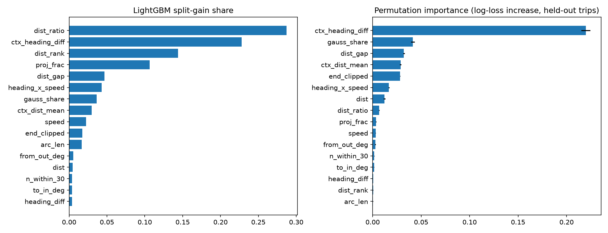
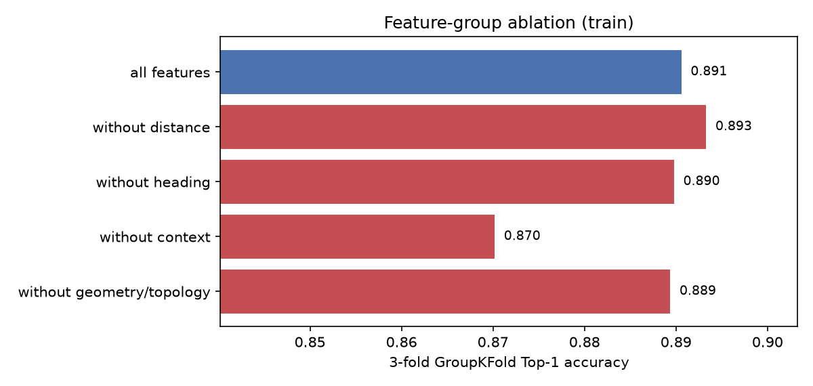
All models use the same candidate table and the same 16 features. Cross-validation is 5-fold GroupKFold over the 80 training trips with the trip as the group, so the points of a trip never appear on both sides of a split (neighbouring points are almost identical and would otherwise leak). After cross-validation each model is refit on all training rows and evaluated once on the 10 student-testing trips. Seeds are fixed at 42. Each algorithm lives in its own file under pathsnap/models/.
Classification metrics (macro F1, precision, recall) treat each candidate row as a binary example with a 0.5 threshold, and macro averaging gives the rare positive class equal weight. Observation-level Top-1 accuracy takes the highest-scoring candidate of each GPS point and checks it against the reference arc; points whose reference arc is missing from the candidates count as errors. Route continuity is the share of consecutive distinct predicted arcs that are directly connected when each point takes its top candidate.
Primary selection metric. We used CV macro F1 as the main metric because it is measured on the training partition only and does not let the student-test trips decide alone. Because the HMM consumes probabilities, we used Top-1 and log loss to separate models with similar F1.
| Model | Family | Key configuration | CV macro F1 (± std) | Student-test Top-1 | Route continuity | Student-test macro F1 | Log loss | Inference time |
|---|---|---|---|---|---|---|---|---|
| 1. Logistic Regression | Linear | C=1.0, L2, lbfgs, standardised | 0.936 ± 0.015 | 0.886 | 0.751 | 0.931 | 0.074 | 0.004 s |
| 2. Gaussian NB | Probabilistic | var_smoothing=1e-9 | 0.900 ± 0.015 | 0.874 | 0.735 | 0.902 | 0.387 | 0.013 s |
| 3. KNN | Instance-based | k=25, distance-weighted, standardised | 0.932 ± 0.018 | 0.885 | 0.719 | 0.934 | 0.097 | 38.6 s |
| 4. Random Forest | Bagging ensemble | 200 trees, min_samples_leaf=5, sqrt features | 0.939 ± 0.017 | 0.896 | 0.756 | 0.940 | 0.062 | 0.26 s |
| 5. LightGBM | Boosting | 400 trees, learning rate 0.05, 31 leaves | 0.939 ± 0.017 | 0.905 | 0.755 | 0.941 | 0.062 | 0.36 s |
| 6. MLP | Neural network | 64-32 ReLU, Adam, alpha=1e-4, early stopping | 0.934 ± 0.018 | 0.897 | 0.762 | 0.938 | 0.065 | 0.04 s |
Inference time is the time to score all 168,380 student-test candidate rows (19,160 GPS points). Log loss is on the student-test partition. Route continuity uses classifier-only predictions; with the HMM it rises to 0.915 (section 5).
Selection. Random Forest (0.9392) and LightGBM (0.9389) are tied on CV macro F1, well within one fold standard deviation. LightGBM is best on student-test Top-1 (0.905), macro F1 (0.941) and log loss (0.0617), trains in 3.9 s against 42 s for Random Forest, and its model file is 1.3 MB against 147 MB. A model that small and fast suits a live API, and 40 rounds of five-fold tuning were practical for it. We selected LightGBM.
1. Why suitable. It is the simplest model that outputs a probability per candidate, and logistic regression probabilities are usually well calibrated. That makes it the baseline every other model has to beat.
2. Strengths and limitations. It trains in 0.44 s and scores the student-test table in 4 ms. It can only draw a linear boundary in feature space, so it cannot express rules such as "close and pointing the same way". That limit shows in its Top-1 of 0.886, the second lowest.
5. Hyperparameters. C = 1.0 (inverse L2 strength), lbfgs solver, max_iter = 2000, with features standardised first.
6. Objective. Binary cross-entropy (log loss) with an L2 penalty.
7. Student-test performance. Macro precision 0.929, recall 0.933, and a classifier-only route continuity of 0.751.
8. Observation-level metrics. Top-1 0.886, macro F1 0.931, log loss 0.074.
9. Over- or underfitting. Mild underfitting and no overfitting: macro F1 is 0.937 on the training folds and 0.936 on the held-out folds. The model is too simple to fit the training data any better.
1. Why suitable. A fast probabilistic baseline that models each feature as a Gaussian per class, used to see how far an independence assumption gets on this problem.
2. Strengths and limitations. Training takes 0.05 s and it has the highest recall (0.952): it rarely rejects the true arc. Its assumption that features are independent given the class does not hold here, because dist, dist_rank, dist_gap and dist_ratio describe the same quantity, so the same evidence is counted several times and the predicted probabilities become overconfident.
5. Hyperparameters. var_smoothing = 1e-9 (the default), with no other settings.
6. Objective. Maximum-likelihood estimates of the per-class means and variances; there is no iterative training.
7. Student-test performance. Macro precision 0.866, the lowest, against recall 0.952; route continuity 0.735.
8. Observation-level metrics. Top-1 0.874, macro F1 0.902, log loss 0.387. The log loss is five to six times that of the other models, which matches the overconfidence described above.
9. Over- or underfitting. Underfitting: macro F1 is 0.900 on the training folds and on the held-out folds, the lowest of all six. More data does not help when the model's assumption is wrong.
1. Why suitable. Candidates with similar distance, heading and context should share a label, so voting among similar training candidates is a reasonable instance-based approach.
2. Strengths and limitations. It needs no training and can fit any boundary. It depends on the feature scale, so features are standardised. Every prediction searches the 550,346 stored rows, which took 38.6 s for the student-test table, about a hundred times slower than LightGBM and too slow for the API. The 25-neighbour vote also gives coarse probabilities (log loss 0.097).
5. Hyperparameters. k = 25, distance-weighted voting, Euclidean distance on standardised features.
6. Objective. None. KNN stores the training set and predicts by a weighted vote.
7. Student-test performance. Macro precision 0.936, recall 0.931; route continuity 0.719, the lowest of the six.
8. Observation-level metrics. Top-1 0.885, macro F1 0.934, log loss 0.097.
9. Over- or underfitting. Clear overfitting: macro F1 is 1.000 on the training folds and 0.932 on the held-out folds. With distance weighting a training row is its own nearest neighbour at distance zero, so it always predicts itself.
1. Why suitable. Trees capture interactions such as distance combined with heading, and averaging many trees reduces the variance of a single tree.
2. Strengths and limitations. It ties for the best CV macro F1 (0.939) and has good probabilities (log loss 0.062). It is the slowest to train (42 s) and the saved model is 147 MB, too large for the GitHub repository.
5. Hyperparameters. 200 trees, min_samples_leaf = 5, max_features = sqrt, unlimited depth, seed 42.
6. Objective. Each split minimises Gini impurity; the forest averages the trees' class probabilities.
7. Student-test performance. Macro precision 0.946, recall 0.934; route continuity 0.756.
8. Observation-level metrics. Top-1 0.896, macro F1 0.940, log loss 0.062.
9. Over- or underfitting. Some overfitting: macro F1 is 0.975 on the training folds and 0.939 on the held-out folds. The minimum leaf size of 5 keeps the gap smaller than KNN's.
1. Why suitable. Gradient-boosted trees model feature interactions like a forest but add trees one at a time to fix the current errors, and they directly minimise log loss, which suits a decoder that needs probabilities.
2. Strengths and limitations. Best student-test Top-1, macro F1 and log loss, 3.9 s to train, and a 1.3 MB model. It has more hyperparameters than the other models and overfits if trained too long (point 9), so it needs tuning (section 4).
5. Hyperparameters. 400 trees, learning rate 0.05, 31 leaves, other settings at LightGBM defaults, seed 42.
6. Objective. Binary log loss, minimised by gradient boosting with leaf-wise tree growth.
7. Student-test performance. Macro precision 0.944, recall 0.937; route continuity 0.755.
8. Observation-level metrics. Top-1 0.905, macro F1 0.941, log loss 0.062.
9. Over- or underfitting. Mild overfitting late in training. On a split that holds out 20% of the training trips, validation log loss reaches its minimum of 0.0744 at iteration 127 and ends at 0.0771 after 400 iterations, while training log loss keeps falling from 0.0469 to 0.0361 (Figure 13). Macro F1 is 0.963 on the training folds and 0.939 on the held-out folds.
1. Why suitable. A small neural network can learn smooth nonlinear combinations of the standardised features and outputs probabilities.
2. Strengths and limitations. Fast inference (0.04 s) and the best classifier-only route continuity (0.762). Training takes 33 s and the result depends on the stopping point; the validation loss starts rising early.
5. Hyperparameters. Hidden layers of 64 and 32 ReLU units, Adam, L2 alpha = 1e-4, early stopping on 10% of the data, at most 60 epochs, seed 42.
6. Objective. Binary cross-entropy with an L2 penalty.
7. Student-test performance. Macro precision 0.946, recall 0.930; route continuity 0.762.
8. Observation-level metrics. Top-1 0.897, macro F1 0.938, log loss 0.065.
9. Over- or underfitting. Overfitting starts early. Training the same network epoch by epoch on 80% of the training trips, validation log loss is lowest at epoch 8 (0.0804) and rises to 0.0864 by epoch 40, while training loss keeps falling (Figure 13). Early stopping in the final configuration limits this; macro F1 is 0.950 on the training folds and 0.934 held out.
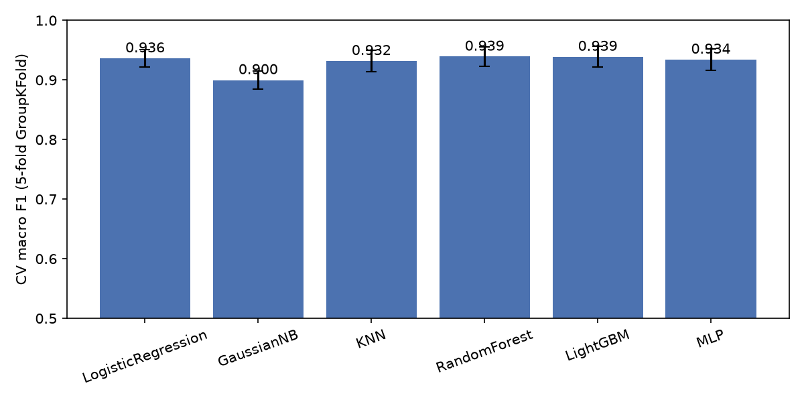
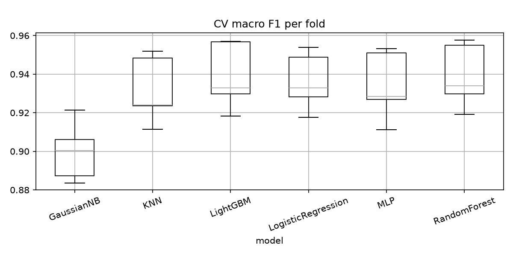
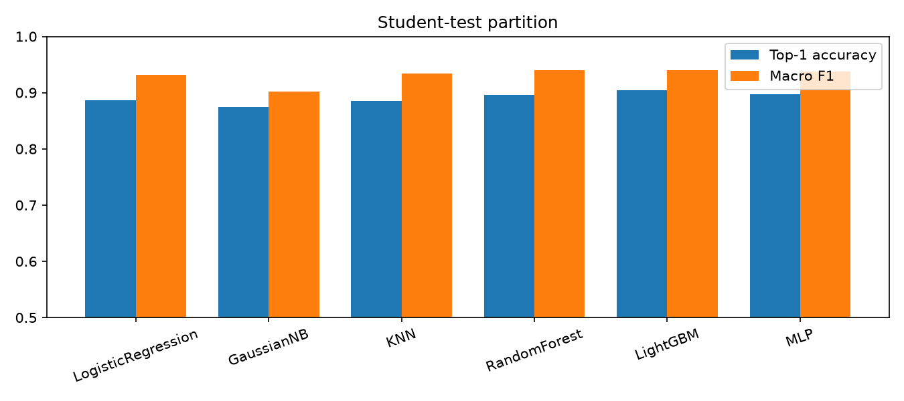
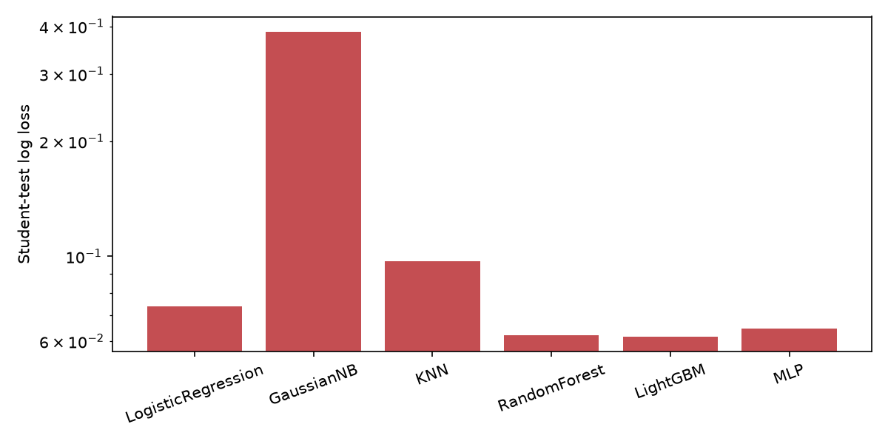
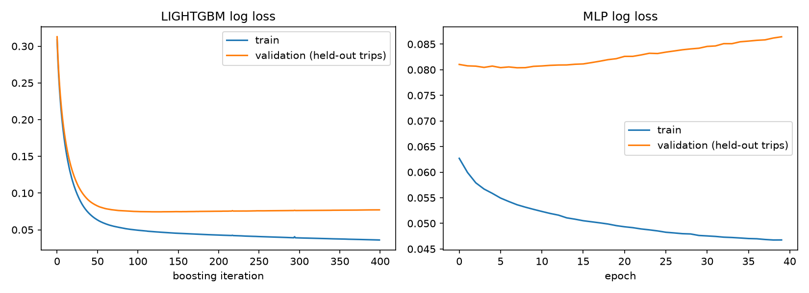
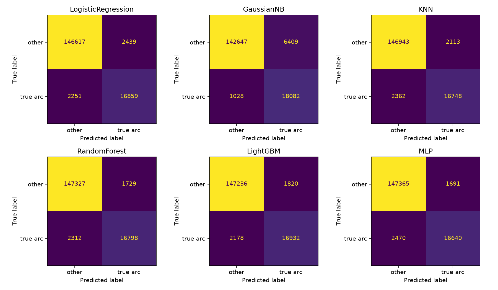
1. Hyperparameters searched. Number of trees, learning rate, number of leaves, minimum samples per leaf, row subsampling, feature subsampling, L2 regularisation and positive-class weight.
2. Ranges.
| Hyperparameter | Distribution | Range | Best value |
|---|---|---|---|
| n_estimators | integer uniform | 100 to 1000 | 521 |
| learning_rate | log-uniform | 0.01 to 0.2 | 0.0466 |
| num_leaves | integer uniform | 15 to 255 | 247 |
| min_child_samples | integer uniform | 10 to 300 | 278 |
| subsample | uniform | 0.5 to 1.0 | 0.979 |
| colsample_bytree | uniform | 0.4 to 1.0 | 0.560 |
| reg_lambda | log-uniform | 0.001 to 10 | 2.143 |
| scale_pos_weight | uniform | 1 to 4 | 1.647 |
3. Objective. Mean macro F1 over 5-fold GroupKFold on the 80 training trips, maximised with Optuna's TPE sampler (seed 42). The student-test and evaluator-test partitions were not used in the search.
4. Trials. 40 trials, 200 model fits in total, in 4,058 s (about 68 minutes) on a 10-core laptop CPU.
5. Best values. In the table above. The search moved towards large trees (247 leaves) held back by a large minimum leaf size (278) and moderate L2, with about half the features per tree.
6. Did tuning help? Yes, by a small amount on every accuracy metric. CV log loss got slightly worse, probably because a positive-class weight of 1.65 pushes the predicted probabilities upwards; student-test log loss still improved. The tuned model is about four times slower at inference because its trees are larger.
| Metric (same partitions for both) | Untuned | Tuned |
|---|---|---|
| CV macro F1 (train, 5-fold GroupKFold) | 0.9389 | 0.9405 |
| CV Top-1 (train) | 0.8950 | 0.8981 |
| CV log loss (train) | 0.0619 | 0.0641 |
| Student-test Top-1 | 0.9047 | 0.9075 |
| Student-test macro F1 | 0.9405 | 0.9430 |
| Student-test log loss | 0.0617 | 0.0610 |
| Training time (full train set) | 6.3 s | 28.2 s |
| Inference time (student-test reliable rows) | 0.43 s | 1.66 s |
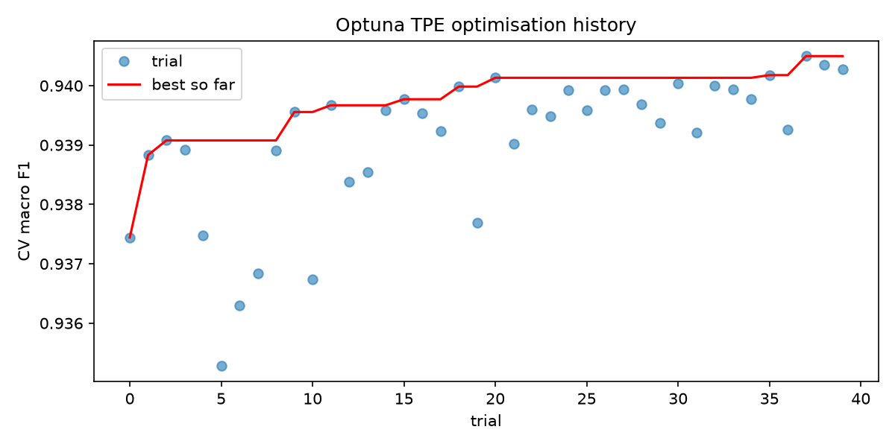
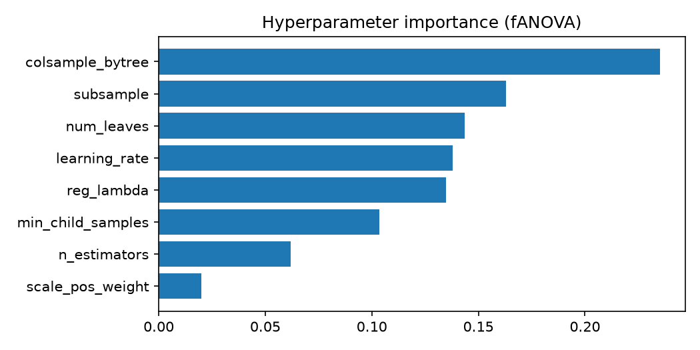
1. Hidden states. At GPS observation t the hidden state is one of that observation's candidate arcs, together with the point where the observation projects onto it. The state space changes at every step, and every state is a real arc ID, so the decoded path is directly a sequence of road arcs.
2. Emission probabilities. The emission score of candidate arc a at time t is the log of the tuned LightGBM probability, clipped at 10-4 and multiplied by an emission weight:
3. Transition probabilities. For arc a at t−1 and arc b at t we compute the driving distance through the road graph: the rest of arc a after the projection point, the Dijkstra shortest path from a's end node to b's start node, and the part of arc b up to its projection point. When a and b are the same arc it is the distance along the arc between the two projections. The transition compares this with the straight-line distance between the two GPS points:
A car moving between two points on a road covers a driving distance close to the straight-line distance; a detour or a jump to a parallel street makes them differ. Dijkstra searches up to max(300 m, 4 × dGPS) from each source node, and the graph is the cropped trip network with arc lengths in metres.
Viterbi recurrence. δt(b) = maxa [ δt−1(a) + log T(a → b) ] + log et(b), keeping a back-pointer to the best a. The route is read backwards from the best final state. Everything is in log space.
4. Missing candidates and large GPS gaps. Every observation has candidates, because the ten nearest arcs always exist. A reference arc missing from the candidates (0.12% of student-test points) cannot be recovered and counts as an error. For gaps, the transition scale is st = 1 for steps up to 5 s and st = Δt / 5 beyond that, so after a long gap a larger difference between route and GPS distance is accepted. The Dijkstra limit also grows with the GPS displacement.
5. Disconnected road segments. If arc b cannot be reached from arc a within the search limit, the transition gets a fixed log-penalty of −40 instead of −∞. The decoder therefore never dead-ends when the network is fragmented (median 20 components per trip), but it takes such a jump only when the emissions strongly support it. After decoding, consecutive arcs that are not directly connected are joined with the Dijkstra shortest path (up to 2 km), which gives a continuous arc route for drawing and for the route metrics.
Decoder tuning. β and wemit were chosen by grid search (β ∈ {2, 4, 8, 16, 32}, wemit ∈ {0.5, 1, 2}) on out-of-fold LightGBM probabilities of all 80 training trips, so the probabilities used for tuning come from models that never saw those trips. The best setting was β = 4, wemit = 0.5, with out-of-fold point accuracy 0.934 against 0.899 for the classifier alone.
6. Did HMM decoding improve the route? Yes, on all ten student-testing trips.
| Trip | Points | Accuracy, classifier | Accuracy, + HMM | Continuity, classifier | Continuity, + HMM | Route F1, classifier | Route F1, + HMM |
|---|---|---|---|---|---|---|---|
| 00000000 | 2,503 | 0.954 | 0.982 | 0.769 | 0.952 | 0.794 | 0.973 |
| 00000007 | 1,354 | 0.985 | 0.999 | 0.971 | 1.000 | 0.953 | 0.992 |
| 00000009 | 1,049 | 0.886 | 0.911 | 0.748 | 0.851 | 0.835 | 0.958 |
| 00000040 | 2,995 | 0.954 | 0.980 | 0.775 | 0.961 | 0.828 | 0.997 |
| 00000052 | 262 | 0.981 | 1.000 | 0.819 | 0.877 | 0.912 | 0.989 |
| 00000056 | 3,958 | 0.924 | 0.977 | 0.744 | 0.891 | 0.902 | 0.992 |
| 00000065 | 768 | 0.858 | 0.884 | 0.774 | 0.920 | 0.639 | 0.993 |
| 00000076 | 1,486 | 0.930 | 0.979 | 0.709 | 0.890 | 0.726 | 0.949 |
| 00000077 | 3,911 | 0.802 | 0.868 | 0.695 | 0.936 | 0.851 | 0.954 |
| 00000091 | 874 | 0.904 | 0.958 | 0.700 | 0.870 | 0.665 | 0.994 |
| Mean | 1,916 | 0.918 | 0.954 | 0.770 | 0.915 | 0.810 | 0.979 |
Point accuracy is the share of reliable GPS points whose decoded arc equals the aligned reference arc. Route F1 compares the set of arcs in the reconstructed route (after shortest-path filling) with the reference route, so it is the sequence-level measure. Decoding takes 0.02 to 0.38 s per trip.
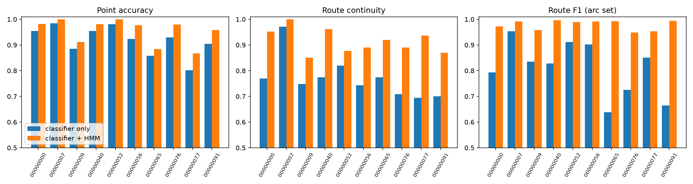
How much comes from the classifier and how much from the HMM. We compared four decoders on the same trips:
| Decoder | Emission | Sequence model | Mean point accuracy |
|---|---|---|---|
| Nearest road | distance only | none | 0.559 |
| Classifier only | LightGBM | none | 0.918 |
| HMM with distance emissions | Gaussian on distance (σ = 8 m) | same HMM, wemit picked per trip from {0.5, 1, 2} | 0.939 |
| Classifier + HMM (ours) | LightGBM | HMM, β = 4, wemit = 0.5 | 0.954 |
The nearest road is right only 56% of the time, largely because the two directions of a street are equally close. Both the classifier and the HMM fix much of that, and combining them gives the best mean even though the distance-only HMM was allowed a per-trip emission weight.
Where the HMM did not help as much.
scripts/make_maps.py writes one interactive map per student-test trip to results/maps/trip_<id>.html. Each map has five layers that can be switched on and off in the layer control: raw GPS observations (blue points, every second one drawn), the road network within 150 m of the track (thin grey), the reference route (green, widest line), the classifier-only route (orange) and the HMM route (purple, drawn on top). Green and red markers show the start and end, a fixed legend names each layer, and the map is fitted to the bounds of the GPS track.
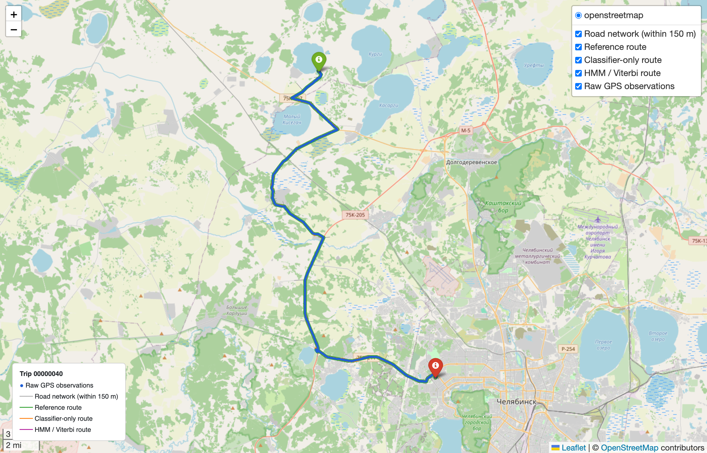
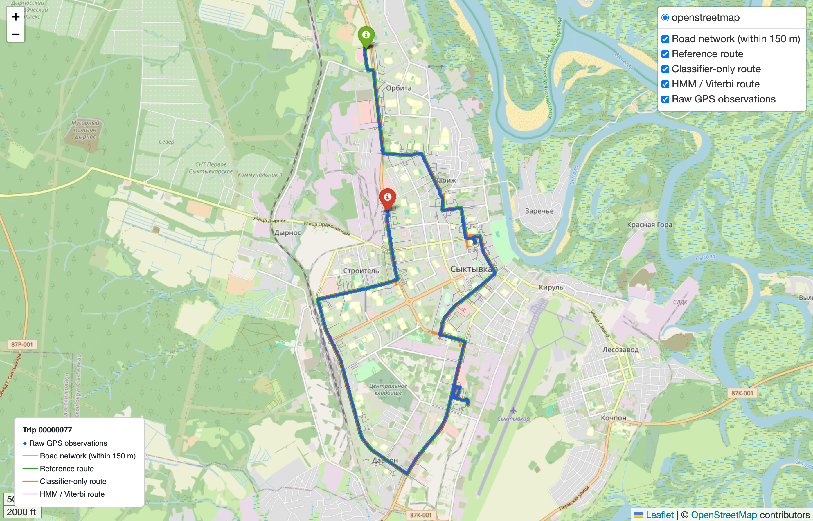
| Laptop | Component | Start command |
|---|---|---|
| Laptop 1 | FastAPI backend: feature extraction, tuned LightGBM, HMM/Viterbi, road networks, server-side scoring | python api/run_api.py |
| Laptop 2 | Evaluator UI (static page, Leaflet map), needs only Python's standard library | python ui/run_ui.py --api http://<laptop-1-ip>:8000 |
The API has three endpoints. GET /trips lists the ten evaluation trips with their point count and duration. POST /predict takes {"trip_id": ...}, runs the full pipeline and returns the predicted route polyline, the matched arc and probability for every GPS point, and summary scores. GET /health reports the model and HMM settings. The prediction pipeline loads a trip without its .route file. The reference route is read only inside the scoring function on Laptop 1, and the response never contains it. Every request is logged on Laptop 1 with the client address, the trip, the processing time and the scores. With PATHSNAP_MODEL_URI=models:/pathsnap-lightgbm/1 the API loads the model from the MLflow registry instead of the saved file.
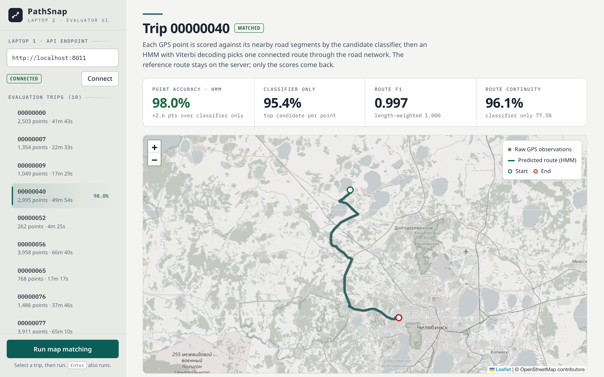
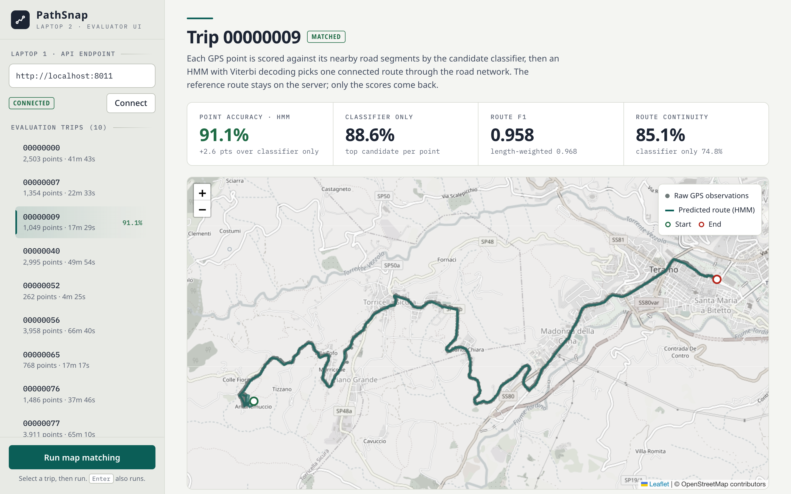
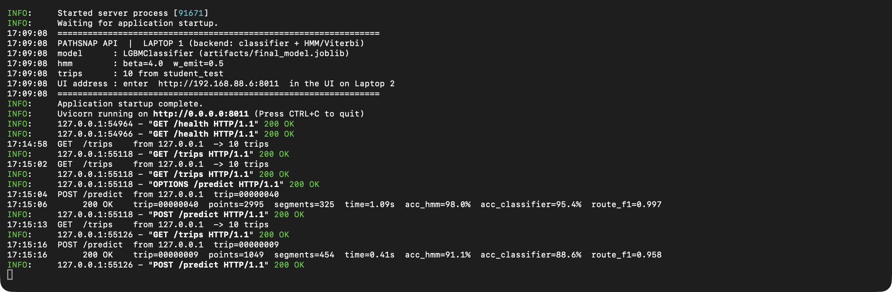
Training runs started from pathsnap/training.py log their parameters, metrics and model file to MLflow. scripts/log_to_mlflow.py records the saved results of every experiment in four experiments (model comparison, the 40 Optuna trials as child runs, the HMM grid and the classifier against HMM comparison, and the final model) and registers the tuned LightGBM as pathsnap-lightgbm. Runs created from saved outputs are tagged source = recorded results.
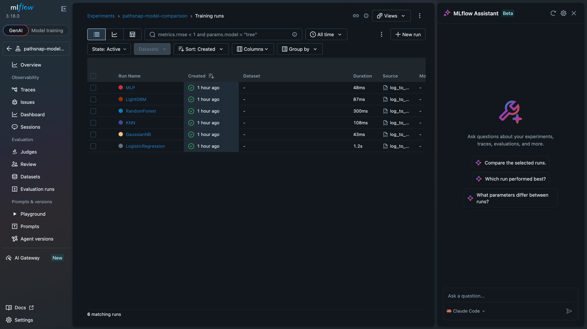
scripts/train_models.py recreates them.Every number in this report comes from files in the repository: results/eda/ (section 2), results/feature_selection/ (2.6), results/model_comparison.csv and results/cv_folds.csv (3), results/bayes_*.json/csv and results/tuned_vs_untuned.csv (4), results/hmm_tuning.csv, results/hmm_vs_classifier.csv and results/hmm_baseline.csv (5), and results/maps/ (6). The scripts that produce them are listed in the README and run in this order: eda.py, build_dataset.py, feature_selection.py, train_models.py, bayes_opt.py, evaluate_hmm.py, hmm_baseline.py, make_maps.py, log_to_mlflow.py. All seeds are 42.